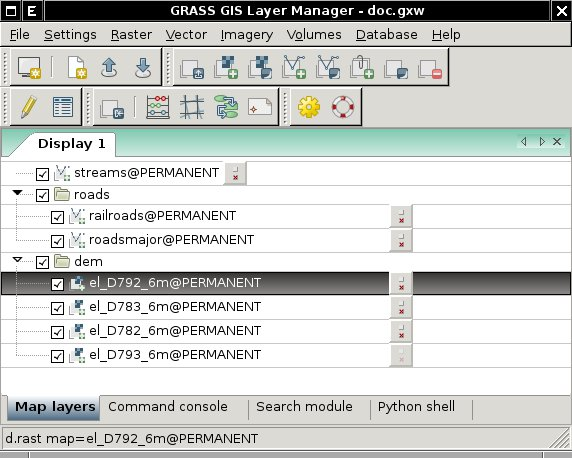

DESCRIPTION
To start the wxPython-based GUI automatically with each session run
GRASS with 'wx' switch
or define in your .grassrc file 'GRASS_GUI' variable
The GUI can be quit by selecting the 'File->Exit' menu item. The GUI
can be restarted from the GRASS command line prompt by
typing wxgrass.
The GUI is composed by two main components:
- Layer Manager which allows users to run different GRASS
modules from menu, includes map layer management, integrated
command-line prompt, and command output window frame.
- Map Display Window which integrates basic tools for
zooming, panning, data querying, decorations (north arrows,
barscale, etc.). The user is allowed to start various map display
instances during one session. The Layer Manager registers Map
Display Windows using different tabs.
Layer Manager
The Layer Manager provides an interactive graphical interface to GRASS
commands. It includes a set of pull-down menus for all GRASS GIS
functions (analysis, file I/O, GIS configuration and management), the
toolbar to manage display map layers, a layer tree frame in which map layers
to display are organized, command output window frame, and interactive
command line prompt.

The top left button of the toolbar opens a new Map Display
Window. Each map display has a unique set of layers to display
and region setting. Other toolbar buttons add layers of different
types for display in the selected map display window. There are
additional buttons for saving or opening workspace file, and others.
Map layers are listed in the window frame below the toolbar. Layers can
include raster and vector maps, text, map decorations (scale and
north arrow, and grids), and commands (where any GRASS command can be
written). Layers are displayed in as arranged in the layer tree: the
bottom layer is displayed first and the top is displayed last, as if
layers are a series of stacked overlays. Any layer can be renamed by
double clicking on its name and typing a new name.
The check box to the left of each layer makes it active or inactive
for display. Only active layers are displayed/redisplayed when the
display button is pressed. Layers can be organized into groups; entire
groups can be activated or deactivated for display. Layer tree
composition can be saved to a workspace file and opened in subsequent
sessions, restoring all layers and their display options.
Map Display Window
This component includes toolbar area (set of toolbars), map canvas
where a map composition is displayed, and the statusbar.

Each Map Display Window has a unique layer tree and region
setting. The window contains a toolbar with buttons to manage the map
in the display (zoom and pan), providing tools for query and distance
measurement, and exporting or printing the display.
In the statusbar can be displayed the geographic coordinates under the
cursor, current geographical region extent, computational region
(including graphical visualization in map display), map display
geometry (number of rows, columns, resolution) and map scale.
It is important to note that zooming in any display will
have no effect on the 'computational region' setting (set
with g.region). Only by selecting
the 'Set current region to match display' item in the zoom menu (in
the map display toolbar) will the current display extents be copied to
the computational region extents.
SEE ALSO
Digitization tool
Wiki page
TCL/TK-based GIS Manager,
TCL/TK-based Display Manager
AUTHORS
(Alphabetically ordered)
Michael Barton,
Daniel Cavelo,
Jachym Cepicky,
Martin Landa, FBK-irst, Trento, Italy
$Date$